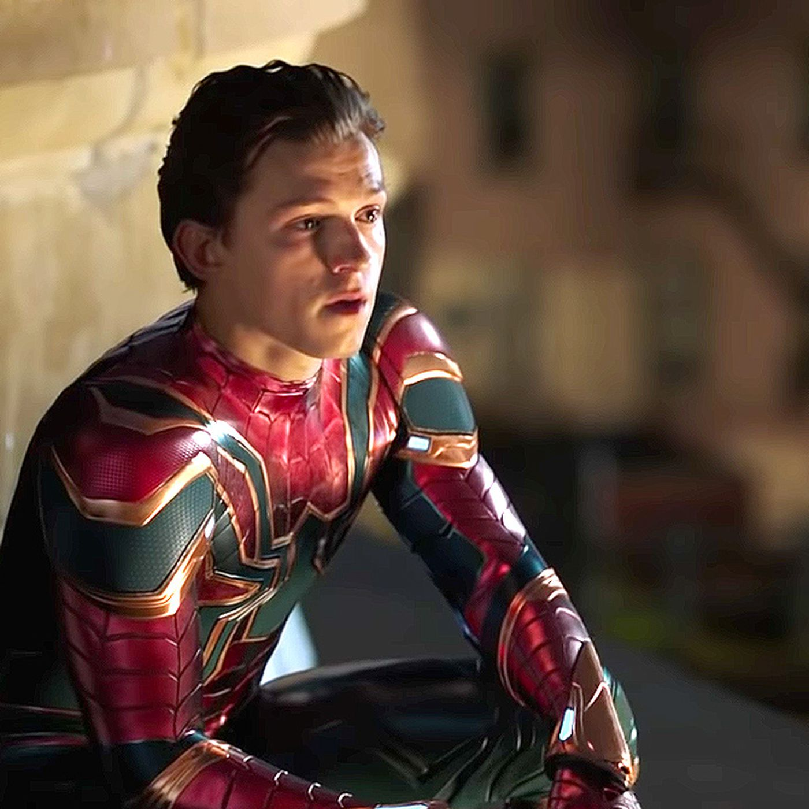

Spider-Man
is a 2002 American superhero film based on the Marvel Comics character of the same name. Directed by Sam Raimi from a screenplay by David Koepp, it is the first installment in the Spider-Man trilogy, and stars Tobey Maguire as the titular character, alongside Willem Dafoe, Kirsten Dunst, James Franco, Cliff Robertson, and Rosemary Harris. The film centers on outcast teen genius Peter Parker who develops spider-like superhuman abilities after being bitten by a genetically-altered spider and decides to use his newfound powers to fight crime as Spider-Man, facing the villainous Green Goblin in the progress.